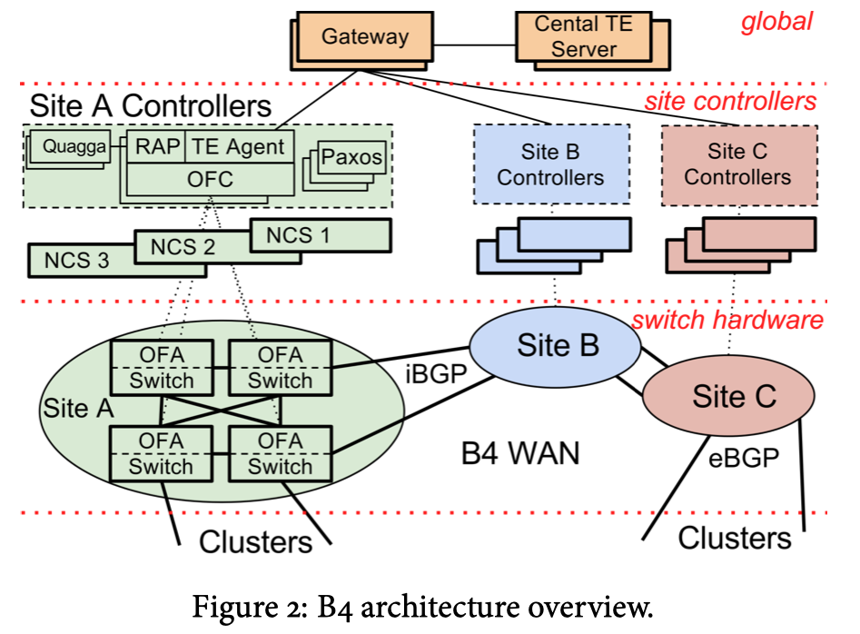

-
B4
is a private WAN that connects Google's data centers in the world
-
Features
-
massive
bandwidth requirements deployed to a modest number of sites
-
elastic
traffic demand that seeks to maximize average bandwidth
-
full
control over the edge (e.g. edge servers and network) => rate-limiting and demand measurement at
the edge
-
centralized
traffic engineering drive links to near 100% utilization while balance capacity against app's
priority/demands
-
Architecture
-
SDN
with OpenFlow to control commodity switches
-
enable
rapid deployment and iteration of novel control functionality
-
enable
tight integration with end applications for adaptive behavior in response to failures or changing
communication patterns
-
enable
simplified testing environments (e.g. through emulation)
-
improved
capacity planning available from simulating a deterministic TE server
-
simplified
management through a fabric-centric rather than router-centric WAN view
-
Motivations
-
Overheads
when building a WAN that connects data centers with substantial bandwidth requirements
-
WAN
links are typically provisioned to 30-40% average utilization to give high availability when
inevitable failure does take place, but such overprovisioning costs a lot
-
Google's
WAN's unique characteristics/properties
-
control
over the apps, servers, LANs all the way to the edge of the network
-
bandwidth
intensive apps usually perform large-scale data copies from one site to another
-
no
more than a few dozen data center deployments, thus enable centralized control of
bandwidth
-
cannot achieve the required level of scale, fault
tolerance, cost efficiency for the network using traditional WAN architectures
-
but we can exploit the properties defined above,
and therefore Google adopted an SDN
architecture for the data center WAN interconnect
-
to
be able to deploy routing and traffic engineering protocols customized to their unique
requirements
-
design
rationales
-
accept
failures are the norm and effects should be exposed to end applications
-
switches
are under central control
-
Centralized
Traffic Engineering (TE) enables
-
leverage
control at network edge to adjudicate among competing demands during resource contraints
-
use
multipath forwarding/tunneling to leverage available network capacity according to application
priority
-
dynamically
reallocate bandwidth in the face of link/switch failures or shifting application demands
-
lead
to 2-3x efficiency improvements relative to standard practice
-
Deployment
environment information at Google
-
Two
distinct WANs (due to different requrements)
-
user-facing
WAN
-
required
to support a wide range of protocols and its physical topology should be more dense than a
network connecting a modest number of data centers (e.g. B4); it should provides high
availability to users
-
B4
that provides connectivity among data centers
-
e.g.
for async data copies, index pushes for interactive serving systems, end user data replication
for availability...
-
90%
of internal application traffic runs across this network
-
Application
categories that run across B4 (ordered in increasing volume, decreasing latency sensitivity, decreasing overall
priority)
-
user
data copies to remote data centers for availability/durability
-
remote
storage access for computation over inherently distributed data sources
-
large-scale
data push synchronizing state across multiple data centers
-
Challenges
-
the
scale of network deployment challenges
-
the
capacity of commodity networking hardware
-
the
scalability, fault tolerance, granularity of control available from networking software
-
WAN
traffic grows very fast
-
SDN
design
-
3
layer architecture
-

-
global layer
-
consists
of logically centralized applications e.g. SDN gateway, central TE server
-
enable
the central control of the entire network via site-level NCAs
-
SDN
gateway abstracts details of OpenFlow and switch hardware from the central TE
server
-
global
layer apps are replicated across multiple WAN sites with separate leader election to set the
primary
-
site controllers layer
-
consists
of Network Control Servers
(NCS) hosting both OpenFlow
controllers (OFC) and Network Control Applications (NCAs)
-
enable
distributed routing and central traffic engineering as a routing overlay
-
fault
tolerance of individual servers and control processes achieved by using a per-site instance of
Paxos, elets one of multiple available software replicas as the primary instance
-
switch hardware layer
-
forward
traffic and does not run complex control software